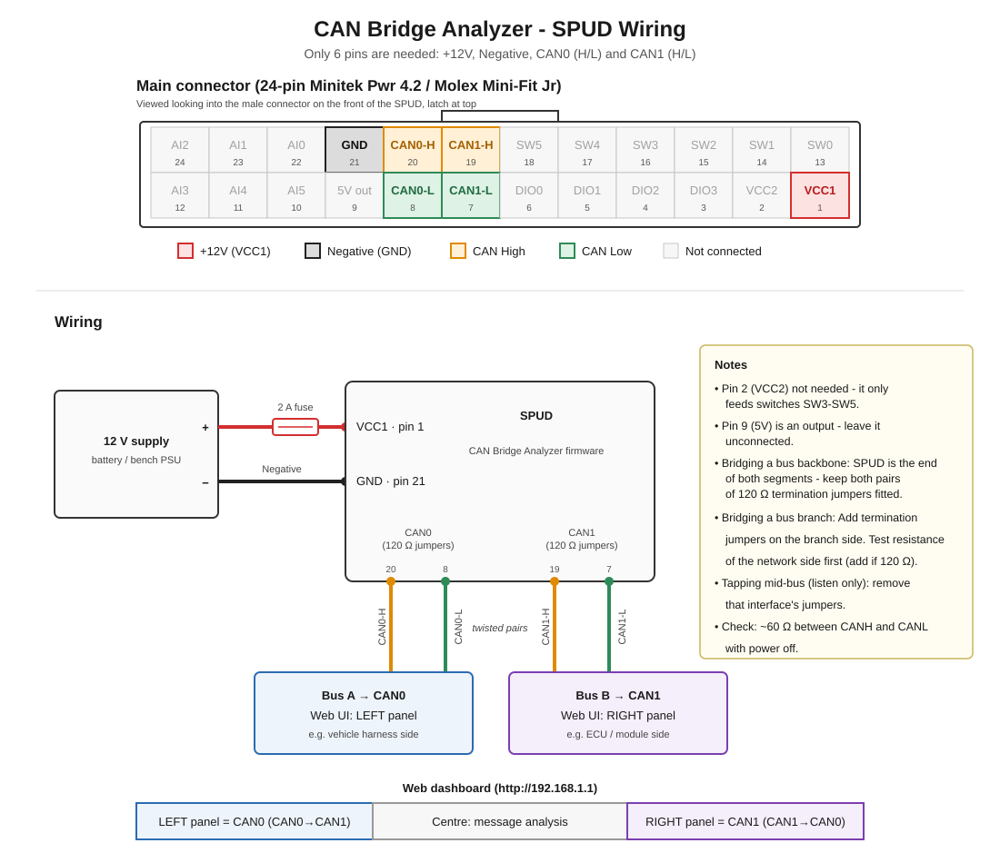

Ripple Tech SPUD with CAN Bridge Analyzer firmware

Full manual: github.com/boydsta/Can-Bridge-Analyzer · Over please: getting started, safety notes and open source notice.
Bridge mode: if the CAN bus is cut and the unit placed in the middle, the two halves of the bus can only talk while the unit is powered and running. If it is off, the vehicle sees a broken bus. Only bridge buses where that is safe, and test on the bench first.
Termination: with power off, CAN-H to CAN-L on each bus should measure about 60 Ω. Fit or remove the 120 Ω jumpers to suit.
With the unit powered and running, touch a wire from +12V (pin 1) to AI2 (pin 24) for about one second. Settings are erased and the default hotspot returns (see overleaf). DBC files and firmware are kept. Leave pin 24 unconnected otherwise.
This device ships with CAN Bridge Analyzer firmware (MIT License), which includes third-party open source components: spud-diy (MIT), ACAN2517FD (MIT), CustomOTA-ESP32 (MIT), ESP-IDF (Apache-2.0), Arduino core for ESP32 (LGPL-2.1), AsyncTCP (LGPL-3.0) and ESPAsyncWebServer (LGPL-3.0). Its filesystem includes Nissan Leaf DBC data files (GPL-3.0).
Full copyright notices and licence texts are on the device at http://192.168.1.1/licenses and at https://github.com/boydsta/Can-Bridge-Analyzer.
Written offer for source code: the complete corresponding source code and build instructions for the firmware on this unit are available at https://github.com/boydsta/Can-Bridge-Analyzer/releases (the firmware version and commit are shown on the /licenses page). In addition, for at least three (3) years from the date you received this product, we will provide a complete machine-readable copy of the corresponding source code for no more than the cost of physically performing the distribution. To request a copy, contact info@rippletech.co.nz and quote your firmware version.
You may modify and reinstall the firmware over USB or at http://192.168.1.1/update.
Keep this card with the unit.